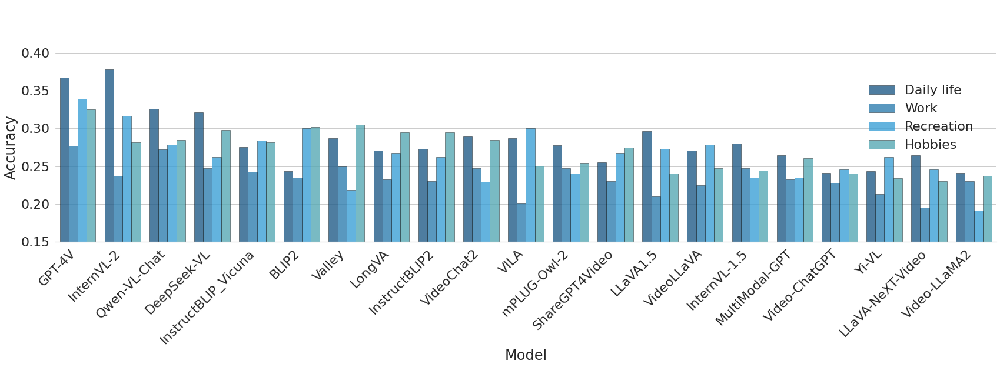

Dataset Statistics
Dataset Statistics
Figure 2. Left: Scenarios distribution of EgoPlan-Bench2, which covers 4 major domains and 24 fine-grained scenarios. Right: Video length distribution. Our benchmark has a full spectrum of video duration, ranging from a few seconds to five minutes.
Study on MLLMs Performance
Figure 3. Models' performance across different scenarios and video lengths.
Figure 4. The accuracy of 21 MLLMs across the 4 main domains in human life.
Enhancing Human-Level Planning by Prompting

Figure 5. The pipeline of our training-free multimodal Chain-of-Thought (CoT) prompting method. We utilize predicted actions sequences as a prompt for representing historical task progress, and bounding box of key objects as a prompt to enhance the understanding of visual observations. By combining these elements with CoT reasoning and a self-consistency mechanism, we strengthen GPT-4V's planning capabilities without the need for additional training.
EgoPlan-Bench2 Examples
Question:
Choices:
Ground Truth:
BibTeX
@article{qiu2024egoplanbench2,
title = {EgoPlan-Bench2: A Benchmark for Multimodal Large Language Model Planning in Real-World Scenarios},
author = {Qiu, Lu and Ge, Yuying and Chen, Yi and Ge, Yixiao and Shan, Ying and Liu, Xihui},
year = {2024},
journal = {arXiv preprint arXiv:2412.04447}
}